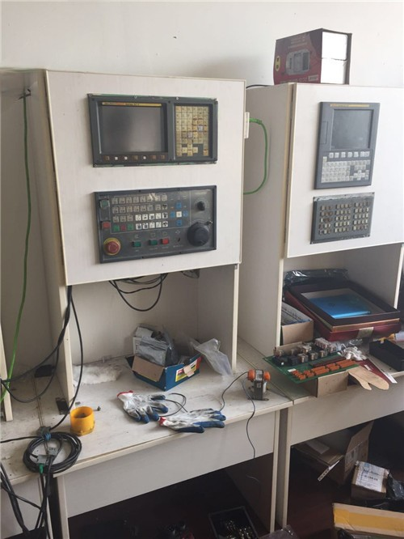
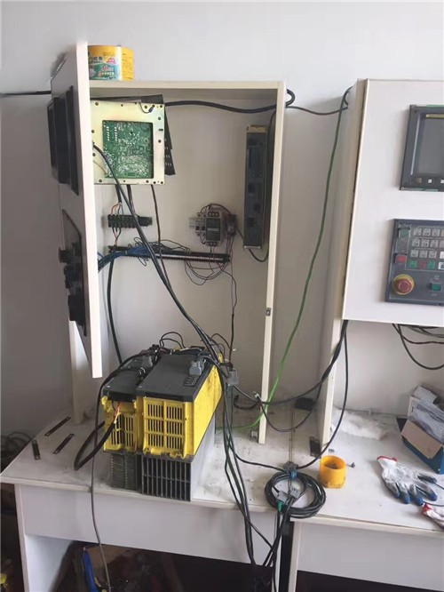
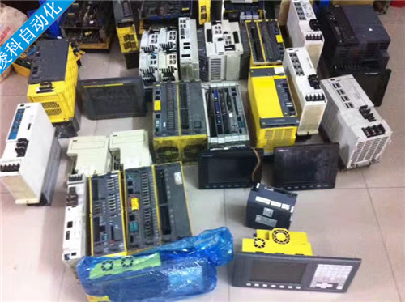

FANUC发那科（法那科）驱动器维修常见故障及处理方法：
按说明书规定，对伺服电动机和控制电路之间进行正确的连接(见机床连接图)。连接中的错误，可能引起电动机的失控或振荡，也可能使电动机或机械件损坏。当完成接线后，在通电之前，进行电源线和电动机壳体之间的绝缘测量，测量用500兆欧表进行：然后，再用表检查信号线和电动机壳体之间的绝缘。注意：不能用兆殴表测量脉冲编码器输入信号的绝缘。
按说明书规定，对伺服电动机和控制电路之间进行正确的连接(见机床连接图)。连接中的错误，可能引起电动机的失控或振荡，也可能使电动机或机械件损坏。当完成接线后，在通电之前，进行电源线和电动机壳体之间的绝缘测量，测量用500兆欧表进行：然后，再用表检查信号线和电动机壳体之间的绝缘。注意：不能用兆殴表测量脉冲编码器输入信号的绝缘。
(3)脉冲编码器的更换 如交流伺服电动机的脉冲编码器不良，就应更换脉冲编码器。更换编码器应按规定步骤进行，以FANUC S系列伺服电动机为例，编码器在交流伺服电动机中的安装如图5-16所示，更换步骤如下：

1—电枢线插座 2—连接轴 3—转子 4—外壳 5—绕组 6—后盖联接螺钉 7—安装座
8—安装座联接螺钉 9—编码器固定螺钉 10—编码器联接螺钉 11—后盖 12—橡胶盖
13—编码器轴 14—编码器电缆 15—编码器插座
图5-16 伺服电动机结构示意图

1）松开后盖联接螺钉6，取下后盖11。 2）取出橡胶盖12。
3)取出编码器联接螺钉10，脱开编码器和电动机轴之间的联接。 4)松开编码器固定螺钉9，取下编码器。
注意：由于实际编码器和电动机轴之间是锥度啮合，联接较紧，取编码器时应使用专门的工具，小心取下。
5)松开安装座的联接螺钉8，取下安装座7。
编码器维修完成后，再根据图5-16重新安装上安装座7, 并固定编码器联接螺钉10，使编码器和电动机轴啮合。
为了保证编码器的安装位置的正确，在编码器安装完成后，应对转子的位置进行调整，方法如下：
1)将电动机电枢线的V、W相(电枢插头的B、C脚)相连。
2)将U相(电枢插头的A脚)和直流调压器的“+”端相联，V、W和直流调压器的“－”端相联(见图5-17a)，编码器加X+5V电源(编码器插头的J、N脚间)。
3)通过调压器对电动机电枢加入励磁电流。这时，因为Iu=IV+IW。，且Iv=Iw，事实上相当于使电动机工作在图5-17b所示的90°位置，因此伺服电动机(永磁式)将自动转到U相的位置进行定位。
注意：加入的励磁电流不可以太大，只要保证电动机能进行定位即可(实际维修时调整在3—5A)。
4)在电动机完成U相定位后，旋转编码器，使编码器的转子位置检测信号C1、C2、C4、C8(编码器插头的C、P、L、M脚)同时为“1”，使转子位置检测信号和电动机实际位置一致。 5)安装编码器固定螺钉，装上后盖，完成电动机维修。

FANUC发那科（法那科）驱动器维修。发那科(FANUC)NC控制器、伺服放大器、伺服电源、控制板、单块控制电路板(主板、CPU板、底板、插板、电源板、MAIN板、I/O板、AXIS 板、SPIF板、CRT板、PMC板、FSRM板、SRAM板、DRAM板、PSU电源板)等维修。
二、FANUC发那科（法那科）驱动器维修型号：
fanuc 0i系统 报警368号维修售后中心维修，：无显示、缺相、过流、过压、欠压、过热、过载、接地、参数错误、有显示无输出、模块损坏、报错等；
FANUC伺服维修常见的故障有：1、2、5、8、9、01、09、19、20、56、U、L、无显示等；
发那科系统常见的故障有：5136、5139、401、414、433、434、443、449、460等。
1) A20B-8101-0285
2） A20B-8101-0180
3） A20B-3300-0283
4） A20B-3300-0393
5） A20B-3900-0163
6） A20B-3300-0291
7） A20B-3900-0170
8） A20B-8100-0710
9） A02B-0309-D502/D

1、发那科(FANUC)系列5系统、0系统、7系统、15系统及18系统等；
2、发那科(FANUC) 0i/0i Mate C（B）系列；
3、发那科(FANUC) 16i/18i/21i-MODEL B系列；
4、发那科(FANUC)NC控制器、伺服放大器、伺服电源、控制板、单块控制电路板(主板、CPU板、底板、插板、电源板、MAIN板、I/O板、AXIS 板、SPIF板、CRT板、PMC板、FSRM板、SRAM板、DRAM板、PSU电源板)等；
A16B-3200-0495 A16B-2203-0652
A16B-3200-0491 A20B-1007-0910
A16B-2202-0432 A16B-2203-0881
A20B-2101-0021 A06B-6114-H207
A16B-2202-0420 A20B-2100-0741
A16B-1310-0380 A16B-2203-0671
A16B-2203-0671 A20B-1007-0880
A16B-2202-0770 A06B-6114-H208
A20B-2101-0050 A20B-2100-0741
A20B-2101-0051 A20B-2100-0742
A20B-2100-0740 A16B-2203-0672
A20B-2000-0580 A06B-6114-H209
A20B-2100-0762 A16B-2203-0673
A20B-2100-0740 A20B-2101-0041
A20B-2100-0801 A20B-2100-0762
A20B-1001-0160 A16B-2203-0641
A20B-8101-0280 A20B-9000-0300
A20B-2101-0050 A20B-9000-0010
A20B-2002-0032 A20B-2002-0300
A20B-8002-0633 A20B-1004-0070
A20B-1004-0840 E4809-045-221-B
A20B-1001-0160 E4809-045-207-A
A20B-2002-0520 E4809-045-209-A
A20B-1005-0421 A20B-2100-0150
A20B-2000-0580 A16B-2202-0070
A20B-1001-0160 A16B-2203-0698
A20B-1006-047 A20B-2100-0250
A20B-1004-0730 A02B-0309-B522
A20B-2002-0032 A98L-0031-0026
A20B-2001-0931 A20B-8101-0440
A20B-2001-0011 A20B-8200-0361
A20B-1008-0096 A20B-8200-0385
A20B-2003-0420 A20B-3900-0223
A20B-2902-039 A02B-0309-B510
A20B-8100-0721 A20B-8002-0632
A20B-1005-0510 A06B-6110-H026
A20B-2100-0130 A06B-6110-H037
A20B-2101-0091 A06B-6111-H026#H550
A20B-2003-0430 A60L-0001-0290/LM50C
A20B-1007-0981 A60L-0001-0290/LM32C
A14B-0082-B111-04 A60L-0001-0290/LM10
A14B-0082-B088-02 A60L-0001-0175/2.0A
A06B-6111-H011 A60L-0001-0359（5A）
A20B-2100-0800 A06B-6111-H006#H550
A860-2109-T302 A06B-6111-H026#H550
A860-0203-T001 A06B-6102-H222#H520
A06B-6058-H004 A06B-6087-H126
A20B-1003-0090 A20B-1004-0260
A20B-1003-0140 A16B-2200-0091
A06B-6058-H003 A16B-2200-0020
A20B-1003-0030 A16B-1212-0501
A06B-6058-H334 A16B-1600-0280
A20B-1003-0864 A16B-1212-022
A16B-1100-0330 A16B-2201-010
A03B-0801-C007 A16B-1212-0100-01
A16B-1310-0010-01 A16B-1212-0110-01